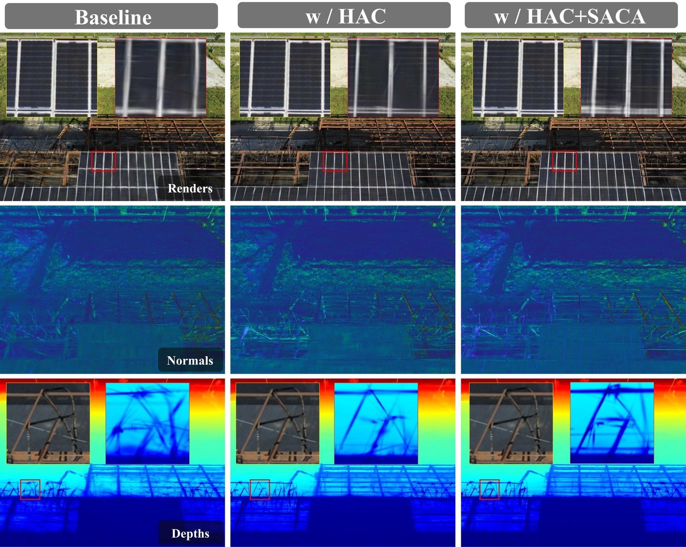
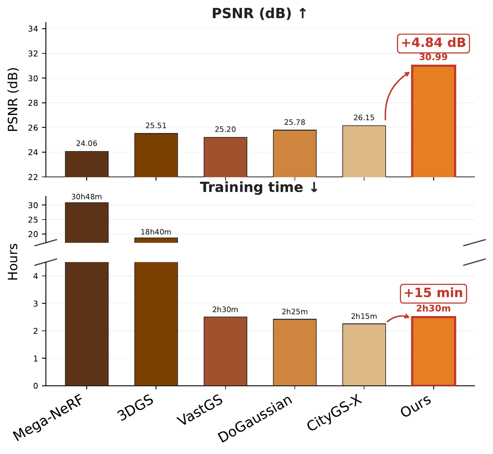

Octree-based 3D Gaussian Splatting organizes anchors into multi-level hierarchies for level-of-detail rendering, but features at different levels are typically optimized independently, leaving the octree topology underused during feature learning. We observe that uniform cross-level aggregation produces asymmetric effects: fine-level anchors benefit from coarse context, whereas coarse-level anchors require selective information from their descendants. We therefore propose TopoGS, a topology-aware anchor feature aggregation framework with two lightweight components. Hierarchical Anchor Coupling establishes bidirectional cross-level gradient pathways by fusing per-level context triplets with a residual MLP. Structure-Aware Containment Aggregation uses octree containment and hash-based matching to distinguish anchors with valid parent-child relations from isolated anchors, then applies soft weighting to accommodate varying topological sparsity. Experiments on ten scenes from Mill19, UrbanScene3D, Tanks & Temples, MatrixCity, and WHU show consistent improvements over state-of-the-art methods. TopoGS achieves average PSNR gains of 2.13, 1.78, and 0.29 dB over the strongest reported baseline on aerial, ground-level, and synthetic-cartographic scenes, respectively, while rendering faster and using less memory.
Comparison on the large-scale aerial scenes of Mill19 and UrbanScene3D. Best results in bold.
| Method | Building | Rubble | Residence | Sci-Art | ||||||||
|---|---|---|---|---|---|---|---|---|---|---|---|---|
| SSIM↑ | PSNR↑ | LPIPS↓ | SSIM↑ | PSNR↑ | LPIPS↓ | SSIM↑ | PSNR↑ | LPIPS↓ | SSIM↑ | PSNR↑ | LPIPS↓ | |
| CityGaussian | 0.778 | 21.55 | 0.246 | 0.813 | 25.77 | 0.228 | 0.813 | 22.06 | 0.211 | 0.837 | 21.39 | 0.230 |
| Momentum-GS | 0.815 | 23.23 | 0.194 | 0.827 | 25.93 | 0.201 | 0.828 | 22.21 | 0.197 | 0.856 | 23.02 | 0.205 |
| BlockGaussian | 0.775 | 22.05 | 0.206 | 0.824 | 26.33 | 0.200 | 0.838 | 23.25 | 0.182 | 0.881 | 25.91 | 0.171 |
| SIG-L | 0.778 | 22.86 | 0.225 | 0.843 | 27.35 | 0.189 | 0.840 | 23.46 | 0.194 | 0.890 | 25.94 | 0.170 |
| CityGS-X | 0.817 | 22.76 | 0.191 | 0.823 | 26.15 | 0.210 | 0.819 | 22.44 | 0.194 | 0.867 | 22.77 | 0.179 |
| Geo-GS | 0.750 | 22.26 | 0.277 | 0.772 | 24.22 | 0.295 | 0.856 | 23.32 | 0.185 | 0.913 | 25.76 | 0.155 |
| TopoGS (Ours) | 0.875 | 25.43 | 0.152 | 0.912 | 30.99 | 0.127 | 0.899 | 25.24 | 0.122 | 0.908 | 26.90 | 0.140 |
The upper group is without and the lower group with explicit geometric optimization; CityGS-X is our backbone. PSNR gains over CityGS-X: +2.67 (Building), +4.84 (Rubble), +2.80 (Residence), +4.13 dB (Sci-Art). Full results in the paper.
Drag the slider to compare TopoGS with the strongest baseline on each scene. TopoGS recovers sharper solar-panel grids, facade edges and fine text.
Without extra geometric supervision beyond the CityGS-X backbone, TopoGS yields sharper normals, cleaner planar depth and marching-cubes meshes with far fewer floaters on UrbanScene3D-Residence.

On Mill19-Building, HAC alone adds +1.91 dB PSNR over the CityGS-X baseline. SACA's containment mask and soft weighting add a further +0.76 dB, refining the solar-panel grid and truss structures.
| Variant | PSNR↑ | Train time↓ |
|---|---|---|
| Baseline (CityGS-X) | 22.76 | 2h15m |
| + HAC | 24.67 | 2h22m |
| + HAC + SACA mask | 25.23 | 2h28m |
| + HAC + SACA (soft α) | 25.43 | 2h30m |

On Mill19-Rubble, TopoGS gains +4.84 dB over CityGS-X with only +15 min of training. HAC adds about 4K parameters and SACA is parameter-free.
| Building | FPS↑ | Mem↓ | #Gauss↓ |
|---|---|---|---|
| CityGS-X | 29.0 | 4.6 GB | 6.38 M |
| TopoGS | 39.4 | 3.0 GB | 4.16 M |
@misc{zhang2026topogstopologyawareanchorfeature,
title={TopoGS: Topology-Aware Anchor Feature Aggregation for Large-Scale 3D Gaussian Splatting},
author={Wei Zhang and Shiqiang Gong and Shengkai Yu and Zeyu Wang and Clement Mallet and Zhitong Xiong and Qi Wang},
year={2026},
eprint={2609.27868},
archivePrefix={arXiv},
primaryClass={cs.CV},
url={https://arxiv.org/abs/2609.27868},
}